Google Analytics Settings
代码（脚本）嵌入网站中
- 登录谷歌分析平台，创建用户。
获取代码（脚本）。
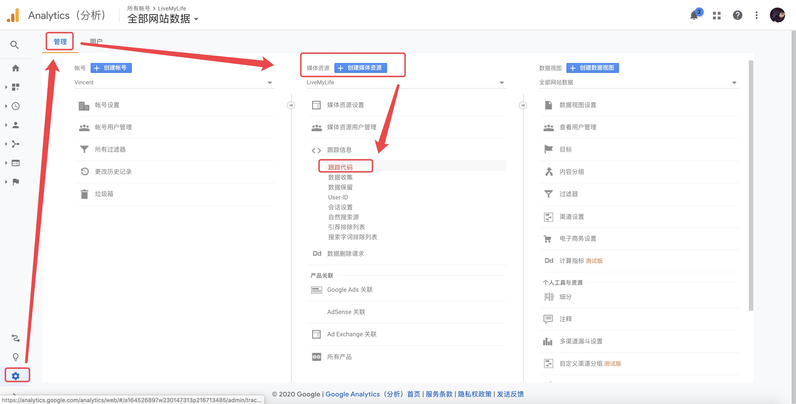hexo-theme-livemylife主题head.ejs文件中，已经添加了下面的 js 脚本。1
2
3
4
5
6
7
8
9<!-- Global site tag (gtag.js) - Google Analytics -->
<script async src="https://www.googletagmanager.com/gtag/js?id=UA-164526897-1"></script>
<script>
window.dataLayer = window.dataLayer || [];
function gtag(){dataLayer.push(arguments);}
gtag('js', new Date());
gtag('config', 'UA-xxxxxx-xx');
</script>直接修改
hexo-theme-livemylife主题_config.yml配置文件ga_track_id为 跟踪 ID。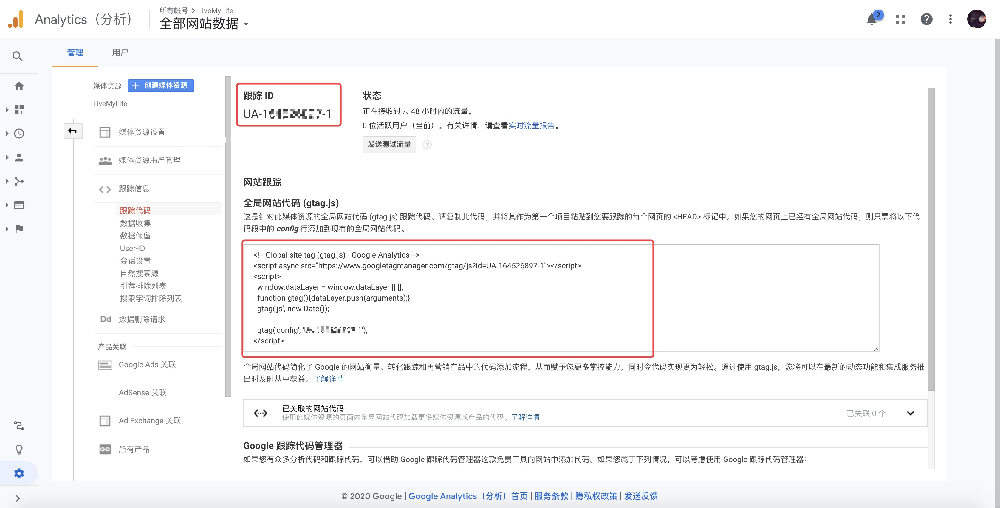
Baidu Analytics Settings
登录百度统计平台，添加 自有网站。
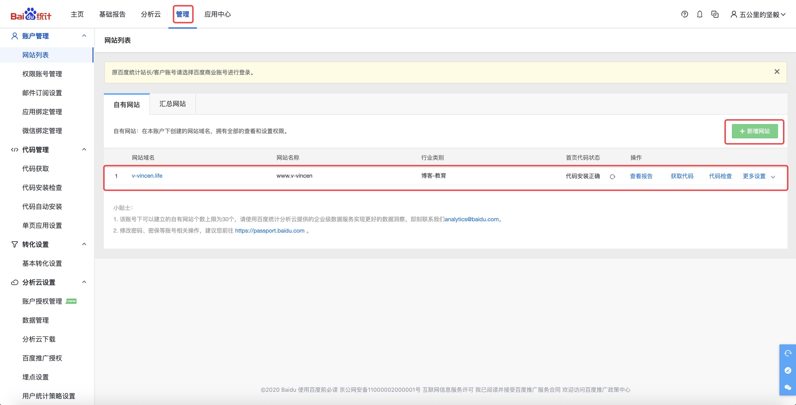
获取代码（脚本）。
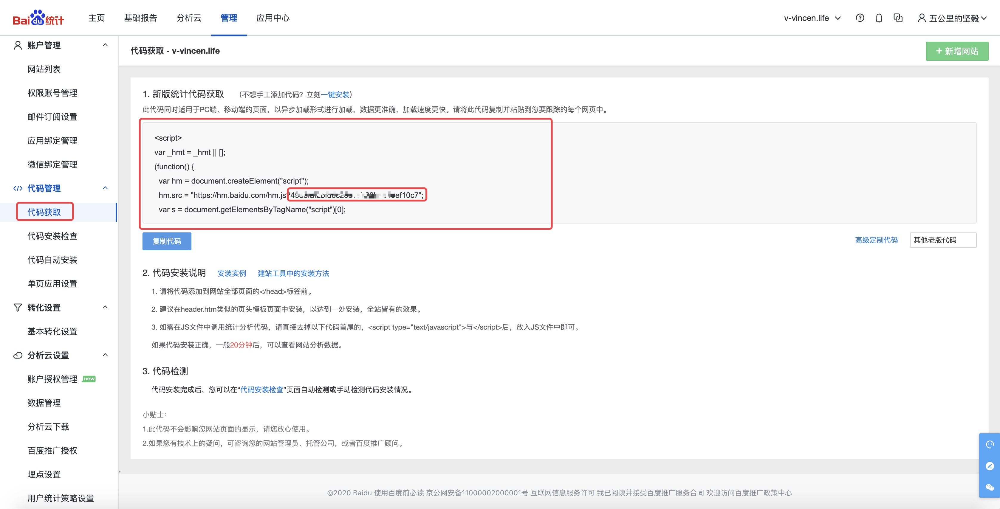
hexo-theme-livemylife主题head.ejs文件中，已经添加了下面的 js 脚本。1
2
3
4
5
6
7
8
9<script>
var _hmt = _hmt || [];
(function() {
var hm = document.createElement("script");
hm.src = "https://hm.baidu.com/hm.js?ba_track_id";
var s = document.getElementsByTagName("script")[0];
s.parentNode.insertBefore(hm, s);
})();
</script>直接修改
hexo-theme-livemylife主题_config.yml配置文件ba_track_id为脚本中的 ba_track_id。1
ba_track_id: ba_track_id
Google Sitemap Settings
验证网站所有权
先进入 google 站点平台，点击右上角的登录，如果还没有谷歌账号的要先注册一个谷歌账号。然后添加资源，这里选择网址前缀，输入博客首页，例如：https://v-vincen.life/
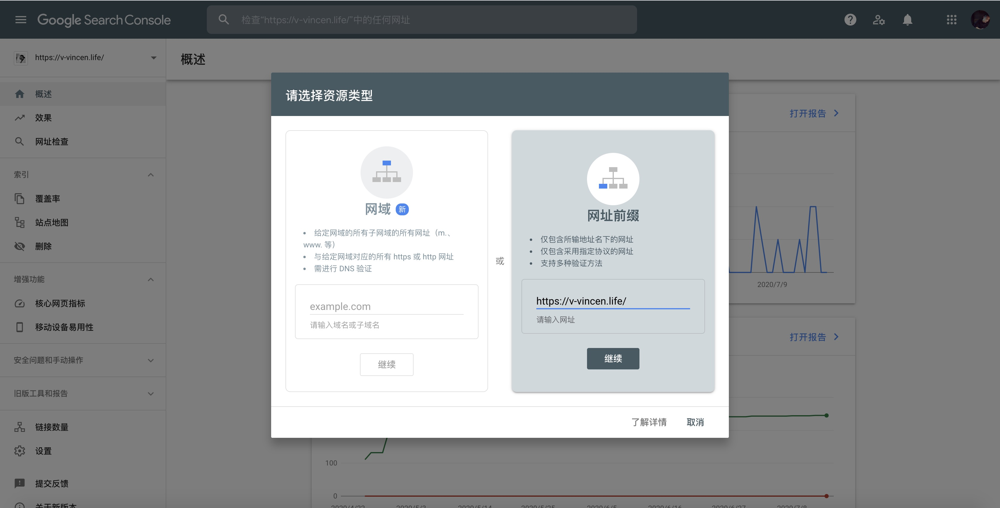
点击继续，验证网站所有权，使用HTML标记验证。
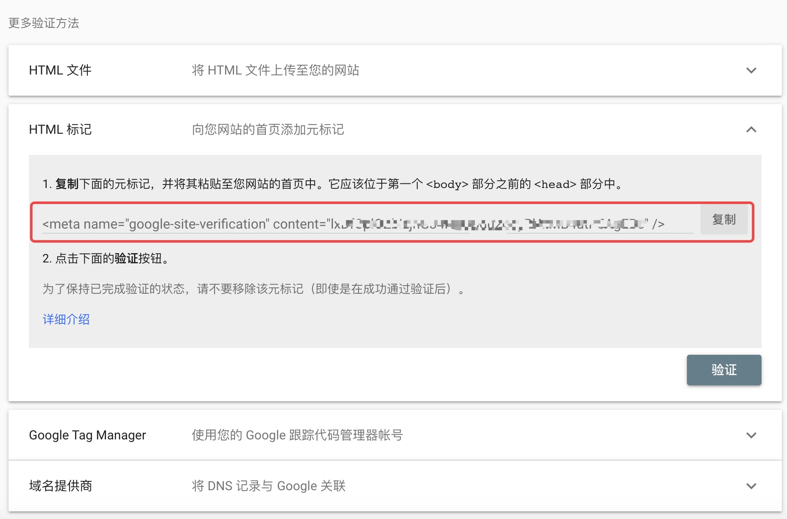
修改
hexo-theme-livemylife主题的head.ejs文件。1
<meta name="google-site-verification" content="X7_M3eeaLhvjhG34NuQBgu2gdyRlAtMB4utP5AgEBc" />
把上面红框的内容复制下来，并粘贴到
head.ejs文件中，通过验证。
安装 sitemap 插件
- 在 hexo 根目录执行下面两个命令。
1
npm install hexo-generator-sitemap --save
修改
hexo-theme-livemylife主题_config.yml配置文件，url换成自己的博客首页，并且需改sitemap配置。1
2
3
4
5
6# URL
## If your site is put in a subdirectory, set url as 'http://yoursite.com/child' and root as '/child/'
url: https://v-vincen.life # Note: don't forget to modify the CNAME file to your url
root: /
permalink: :year/:month/:day/:title/
permalink_defaults:1
2
3## Sitemap
sitemap:
path: sitemap.xml执行
hexo g -d命令，发现在根目录public文件夹下新增了sitemap.xml文件。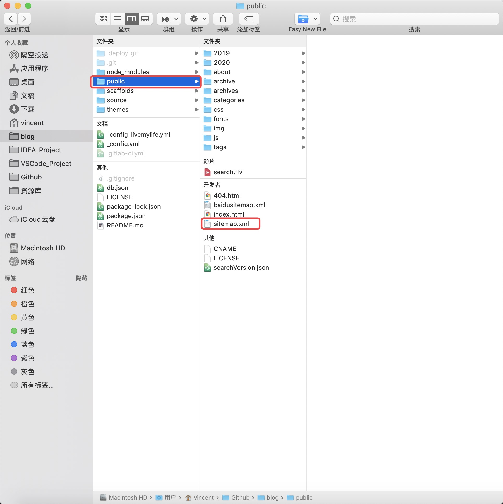
提交谷歌站点地图
接着进入谷歌站点，提交刚才验证网站的站点地图。
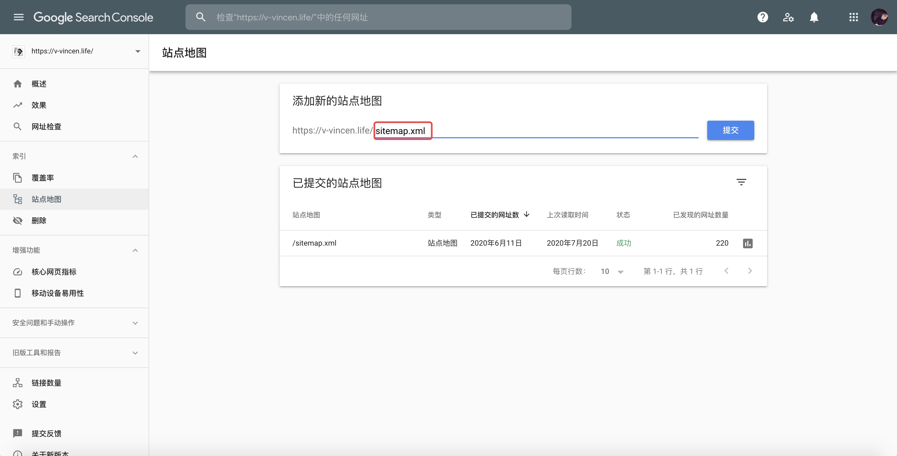
等待谷歌收录，最后谷歌搜索
site:v-vincen.life，看下网页是否被谷歌收录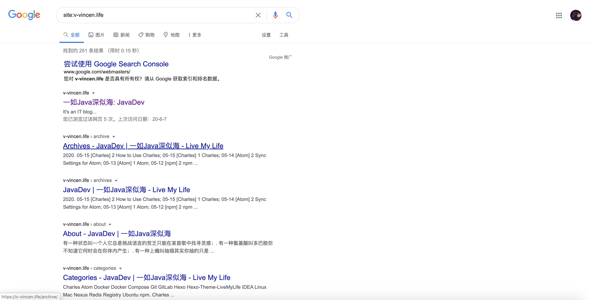
Baidu Sitemap Settings
验证网站所有权
先进入 百度站点平台，「用户中心」-> 「站点管理」-> 「添加网站」，添加需要管理的网站地址。
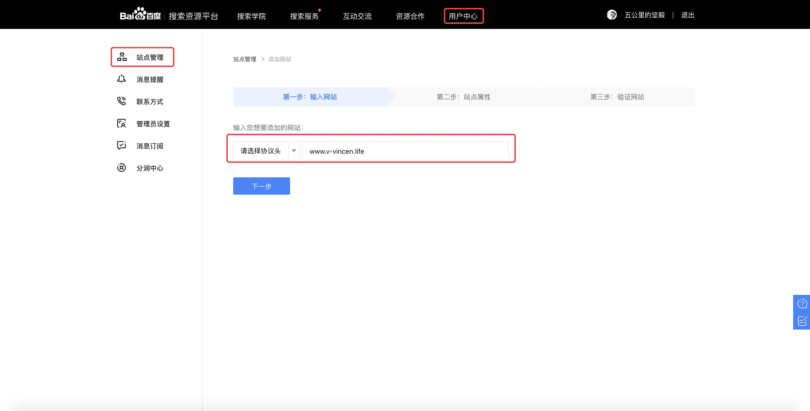
验证有三种方式：文件、html标签、cname。这里采用的是 html 标签的形式，修改
hexo-theme-livemylife主题的head.ejs文件。1
<meta name="baidu-site-verification" content="PpzM9WxOJU" />
添加完相应的标签之后，上传到自己的博客之中，百度站点验证通过。
安装 baidu-sitemap 插件
- 在 hexo 根目录执行下面两个命令。
1
npm install hexo-generator-baidu-sitemap --save
修改
hexo-theme-livemylife主题_config.yml配置文件，url换成自己的博客首页，并且需改Baidusitemap配置。1
2
3
4
5
6# URL
## If your site is put in a subdirectory, set url as 'http://yoursite.com/child' and root as '/child/'
url: https://v-vincen.life # Note: don't forget to modify the CNAME file to your url
root: /
permalink: :year/:month/:day/:title/
permalink_defaults:1
2
3
4
5## Baidusitemap
baidusitemap:
path: baidusitemap.xml
baidu_push: true执行
hexo g -d命令，发现在根目录public文件夹下新增了baidusitemap.xml文件。
百度站点收录
「资源提交」-> 「普通收录」-> 「资源提交」-> 「sitemap」，填写数据文件地址，点击 「提交」。
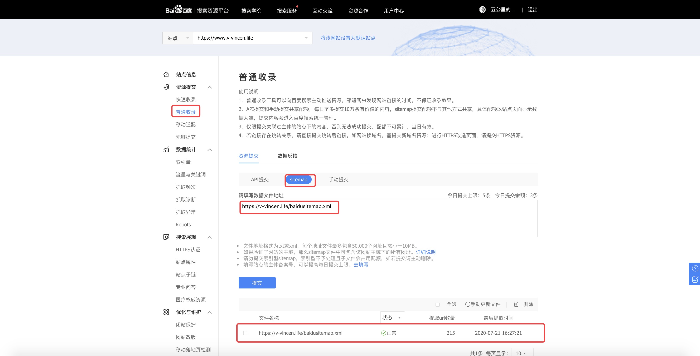
接下来要做的就是等待了，过上一两天就会在这里看到提取的 url 数量了。
自动推送（可添加）
自动推送：是轻量级链接提交组件，将自动推送的 JS 代码放置在站点每一个页面源代码中，当页面被访问时，页面链接会自动推送给百度，有利于新页面更快被百度发现。
hexo-theme-livemylife主题head.ejs文件中，已经添加了下面的 js 代码。1
2
3
4
5
6
7
8
9
10
11
12
13
14<script>
(function(){
var bp = document.createElement('script');
var curProtocol = window.location.protocol.split(':')[0];
if (curProtocol === 'https'){
bp.src = 'https://zz.bdstatic.com/linksubmit/push.js';
}
else{
bp.src = 'http://push.zhanzhang.baidu.com/push.js';
}
var s = document.getElementsByTagName("script")[0];
s.parentNode.insertBefore(bp, s);
})();
</script>直接修改
hexo-theme-livemylife主题_config.yml配置文件Baidusitemap.baidu_push为true。1
2
3
4## Baidusitemap
baidusitemap:
path: baidusitemap.xml
baidu_push: true
If you like this blog or find it useful for you, you are welcome to comment on it. You are also welcome to share this blog, so that more people can participate in it. If the images used in the blog infringe your copyright, please contact the author to delete them. Thank you !